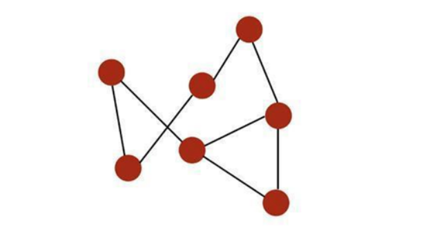
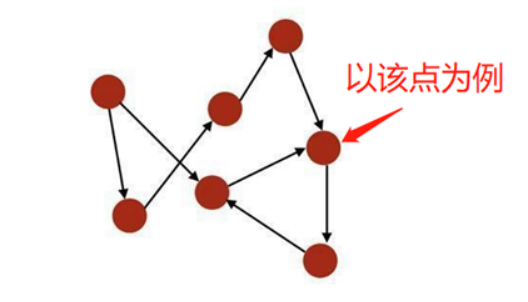
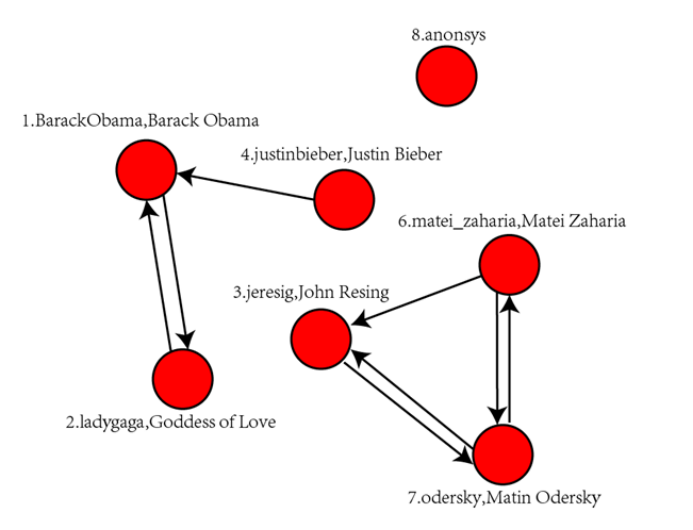
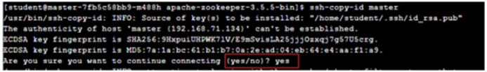
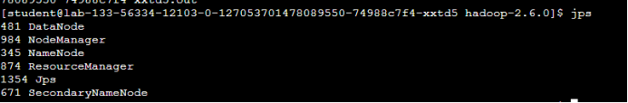
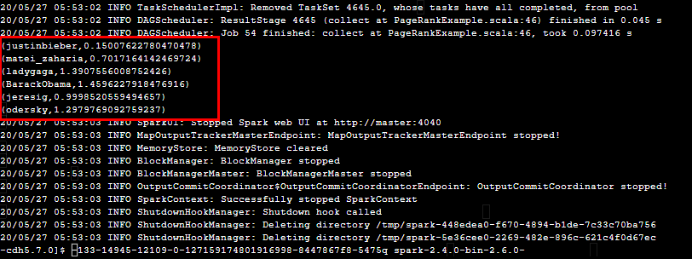

Spark GraphX 应用：PageRank算法计算社交网络用户的受欢迎程度
实验简介
本实例将使用Spark GraphX提供的PageRank算法实现在社交网络中用户的受欢迎程度。
实验目的
- 理解PageRank算法
- 掌握使用Spark GraphX实现PageRank算法
- 掌握简单的算法优化
实验内容
PageRank算法即网页排名算法，是Google创始人拉里· 佩奇（Larry Page）和谢尔盖· 布林与1997年构建早期的搜索系统原型时提出的链接分析算法，PageRank算法中的Page指的是佩奇而非网页。自从Google在商业上获得巨大成功后，该算法引起了研究者们的广泛关注，目前很多重要的链接算法都是在PageRank算法基础上衍生出来的。PageRank算法是Google用来标识网页等级的重要依据，是Google衡量一个网站的好坏的唯一标准。对网页进行排名需要量化的依据，因此PageRank算法对每一个网页进行计算后得到一个在0到10范围内的值，即该网页的PageRank值，简称PR值。PR值越高说明网页越受欢迎，越重要。随着PageRank算法进一步应用与发展，该算法也逐渐应用于社交网络的数据挖掘之中。
本实例将使用Spark GraphX提供的PageRank算法实现在社交网络中用户的受欢迎程度。
实验知识点
- 了解图论相关知识
- 理解PageRank算法
- 掌握使用Spark GraphX实现PageRank算法
- 掌握简单的算法优化
实验环境
- 系统环境及开发工具
CentOS 7
IntelliJ IDEA
- 软件环境：
Hadoop 2.6
Spark 2.3
- 用户账号
账号：student
密码：stu123
实验步骤
实验使用Spark GraphX提供的PageRank算法实现在社交网络中用户的受欢迎程度，包括以下步骤：
- 环境准备
- PageRank算法实现步骤及实验数据说明
- 图论知识介绍
- 使用Spark GraphX提供的PageRank
- 验证结果
环境准备
云端环境已经搭建好spark和hadoop环境，本实验先在本地完成程序开发，然后上传至云端实验环境运行。
图论基础知识
为了理解GraphX的工作原理以及PageRank的算法过程，我们需要了解什么是图，图计算究竟在计算什么？遵循这两个问题，我们可以从社交网络、人物关系挖掘、节点之间依赖计算等方面来理解图计算。
图的概念
图数据存在于我们生活的方方面面，如果将用户、网页等对象定位为多个点，而他们之间的互相联系抽象为边，那整个不同事物之间错综复杂的联系就构成了一幅幅“图数据”。为了便于理解，这里可以举几个经典场景。
- 社交网络图：将每个人作为一个点，而人与人之间的互动（关注，回复等）关系是边，那么庞大的社交圈子中，不同用户以及用户之间的互动联系就构成了庞大的社交网络关系图。
- 网页链接图：通过一个网页的超链接，可以跳转到其他多个网页，而跳转到其他网页后又可以通过该网页上的超链接跳转到另外的网页，重复这个过程，网页与网页之间的多个跳转联系就构成了一个复杂的网页链接图。通过对网页链接图的数据挖掘，可以分析出来哪个网页是访问量较大的重要网页。
至此，可以给图下一个简单的定义：图是互连节点的集合。

图的基本表示方法
一个图 G=(V, E) 由下列要素构成：
- 一组节点(Verticles)，表示为V=1,…,n
- 一组边(Edges)，表示为E⊆V×V
- 边 (i,j) ∈ E 连接了节点 i 和 j
- i 和 j 被称为相邻节点（Neighbor）
- 节点的度（degree）是指相邻节点的数量
如果一个图的边是有顺序的配对，则该图是有向的（directed）。点的入度（in-degree）是指向点的边的数量，出度（out-degree）是远离点的边的数量。

基于上述基本知识，进一步理解PageRank算法。
PageRank算法实现步骤
实现步骤：
- 第1步，初始化：PageRank算法基于两个假设：数量假设和质量假设。首先，通过链接关系构建Web图（网络中每个页面对应Web图中的一个顶点，若网页A中包含一条指向B的链接，则Web图中存在一条由顶点A指向顶点B的边）；然后为Web图中的每个顶点设置初始的PR值（通常设定每个顶点的初始PR值为1/N,其中N为网络中网页的个数）
- 第2步，迭代计算：首先假设一个用户在访问某网页时，将其跳转到该网页上各超链接页面的概率相同。网页A链向网页B、C、D，所以根据假设，用户从A跳转到B、C、D的概率各位1/3。PageRank算法在每一轮迭代计算的过程中，将每个网页当前的PR值平均分配到该网页指向的超链接页面上，这样每个网页便获得了相应的权值；再将这些权值求和，即得到该网页的新PR值。当每个网页的PR值都获得更新后，就完成了一轮迭代。
- 第3步，结束：随着每一轮的迭代计算，网页中PR值会不断得到更新。当迭代达到一定次数，或者每个网页的PR值固定不变，再或者PR值收敛至某一范围内时，算法停止。算法停止时每个网页的PR值就是该网页最终的PR值。
GraphX提供了静态和动态PageRank的实现方法，这些方法在PageRank对象中。静态的PageRank运行固定次数的迭代，而动态的PageRank一直运行直到收敛为止。
而两种调用方式除了方法名不同，参数类型也是不同的：
- 动态调用：pageRank(double)
- 静态调用：staticPageRank(int)
数据说明
实验使用的数据集路径为：/home/spark-2.4.0-bin-2.6.0-cdh5.7.0/data/graphx
该路径下包括两个文件：①users.txt；②followers.txt
- 文件users.txt中存储的是社交网络中的用户，数据形式如下：
1,BarackObama,Barack Obama2,ladygaga,Goddess of Love3,jeresig,John Resing4,justinbieber,Justin Bieber6,matei_zaharia,Matei Zaharia7,odersky,Matin Odersky8,anonsys其中，BarackObama、ladygaga等均代表用户，也即图的节点。
- 文件followers.txt中存储的是社交网络中的用户关系，数据形式如下：
xxxxxxxxxx2 14 11 26 37 37 66 73 7以第1行数据为例，2 1表示第2个节点指向第1个节点，即节点1与节点2之间的边。

程序开发过程
本实验的开发过程在本地完成，需要在本课程的“参考资料”界面，下载 “ Spark IntelliJ 本地开发环境搭建 ” 说明文档。
按照上面下载的 ”Spark IntelliJ 本地开发环境搭建“ 文档说明，在本地安装配置 JDK，SDK，IntelliJ 开发工具。
在本地电脑的IDEA中新建一个Maven项目：名称为 PageRankExample。
具体步骤请参考 “Spark IntelliJ 本地开发环境搭建”文档中的 “6.2 工程创建” 和 “6.3 配置scala类的运行环境” 部分，并对照 “6.5 修改 pom.xml文件” 部分的内容 ，将pom文件下
xxxxxxxxxx <dependencies> <dependency> <groupId>org.apache.spark</groupId> <artifactId>spark-core_2.11</artifactId> <version>2.3.3</version> </dependency> <dependency> <groupId>org.apache.spark</groupId> <artifactId>spark-streaming_2.11</artifactId> <version>2.3.3</version> <scope>provided</scope> </dependency> <dependency> <groupId>org.apache.spark</groupId> <artifactId>spark-sql_2.11</artifactId> <version>2.3.3</version> </dependency> <dependency> <groupId>org.apache.spark</groupId> <artifactId>spark-graphx_2.11</artifactId> <version>2.3.3</version> </dependency> </dependencies>在项目的scala下创建一个com包，在com包中创建一个Scala对象PageRankExample。具体创建步骤请参考实验“Spark IntelliJ 本地开发环境搭建”文档的 “6.6.1 创建scala类”。
创建PageRankExample类的目的在于，通过调用PageRank算法计算社交网络图，从而得到每个用户的PR值，进而判别每个用户的受欢迎程度。本实验的主体思路为：
- 设置运行环境，导入Jar包、初始化并创建SparkSession等；
- 加载社交网络图的边数据，从而构建图框架；
- 依据图框架运行PageRank算法，得到图框架每个节点的PR值；
- 匹配用户Id与图框架的节点信息；
- 经由步骤4，可以进一步匹配用户Id与节点的PR值，从而获得每个用户的受欢迎程度，即相应的PR值。
在创建的PageRankExample类中编写代码，用于导入包，并添加main函数，代码如下：
xpackage comimport org.apache.spark.graphx.GraphLoaderimport org.apache.spark.sql.SparkSessionobject PageRankExample { def main(args: Array[String]): Unit = { // … … //在此处继续添加后续代码 // … … }}初始化SparkSession并把它创建出来，代码如下：
xxxxxxxxxx// Creates a SparkSession.//通过.build与.appName初始化SparkSession，并通过getOrCreate的方式创建它val spark = SparkSession .builder .master("local[3]") .appName(s"${this.getClass.getSimpleName}") //通过getOrCreate的方式创建SparkSession .getOrCreate()设置运行环境，代码如下：
xxxxxxxxxx//使用变量 sc来表示SparkContext val sc = spark.sparkContext加载社交网络关系数据，即边的数据，代码如下：
xxxxxxxxxx// Load the edges as a graph// 从特定的边列表文件中读取数据生成图框架，arg(0)是一个参数，表示存储边数据的文件val graph = GraphLoader.edgeListFile(sc, args(0))运行PageRank算法
xxxxxxxxxx// Run PageRank// 用上面的图框架来调用pageRank(动态)算法，指定终止条件为两次迭代结果的差值小于“0.0001”// 注意：静态调用的方法名是staticPageRank(Int)，而本实验采用动态调用，故需设置迭代的终止条件// vertices将返回顶点属性val ranks = graph.pageRank(0.0001).vertices匹配用户Id以及与之相应的PageRank顶点属性
xxxxxxxxxx// Join the ranks with the usernames// 将上面得到的ranks（顶点属性）和用户进行关系连接// 首先，读取一个包含了用户信息的文件(由参数args(1)表示)，然后调用map函数对文件进行解析，最后返回RDDval users = sc.textFile(args(1)).map { line =>// 按照分隔符split解析数据，将数据分行两个元素，即将文件里的每行数据按 ”,” 切开val fields = line.split(",")//返回存储了处理后数据的RDD (fields(0).toLong, fields(1))}匹配用户与相应的PR值
xxxxxxxxxx// 这里具体实现了将PageRank的rank结果和用户列表一一对应起来// 从map函数的内容可以看出是按id来进行连接，但返回的结果只含用户名和它的相应PR值val ranksByUsername = users.join(ranks).map { case (id, (username, rank)) => (username, rank) }打印运行结果
xxxxxxxxxx// 收集上面RDD里的数据并打印出来，每打印一条数据换行输出 println(ranksByUsername.collect().mkString("\n"))PageRankExample类完整代码如下：
xxxxxxxxxxpackage comimport org.apache.spark.graphx.GraphLoaderimport org.apache.spark.sql.SparkSessionobject PageRankExample { def main(args: Array[String]): Unit = { // Creates a SparkSession. //通过.build与.appName初始化SparkSession，并通过getOrCreate的方式创建它 val spark = SparkSession .builder .appName(s"${this.getClass.getSimpleName}") .getOrCreate() //使用变量 sc来表示SparkContext val sc = spark.sparkContext // Load the edges as a graph // 从特定的边列表文件中读取数据生成图框架，arg(0)是一个参数，表示存储边数据的文件 val graph = GraphLoader.edgeListFile(sc, args(0)) // Run PageRank // 用上面的图框架来调用pageRank(动态)算法，指定终止条件为两次迭代结果的差值小于“0.0001” // 注意：静态调用的方法名是staticPageRank(Int)，而本实验采用动态调用，故需设置迭代的终止条件 // vertices将返回顶点属性 val ranks = graph.pageRank(0.0001).vertices // Join the ranks with the usernames // 将上面得到的ranks（顶点属性）和用户进行关系连接 // 首先，读取一个包含了用户信息的文件(由参数args(1)表示)，然后调用map函数对文件进行解析，最后返回RDD val users = sc.textFile(args(1)).map { line => // 按照分隔符split解析数据，将数据分行两个元素 val fields = line.split(",") // 返回存储了处理后数据的RDD (fields(0).toLong, fields(1)) } // 这里具体实现了将ranks和用户列表一一对应起来 // 从map函数的内容可以看出是按id来进行连接，但返回的结果只含用户名和它的相应PR值 val ranksByUsername = users.join(ranks).map { case (id, (username, rank)) => (username, rank) } // 收集上面RDD里的数据并打印出来，每打印一条数据换行输出 println(ranksByUsername.collect().mkString("\n")) spark.stop() }}- 代码编写完成，接下来进行工程打包，在本地开发工具里运行一次程序，具体步骤请参考 “Spark IntelliJ 本地开发环境搭建”文档中的 “6.7.2 运行”，本地运行会报错，忽略这些错误，本地运行的主要目的是编译，为下一步打包做准备。
- 对程序进行打包，具体步骤请参考 “Spark IntelliJ 本地开发环境搭建”文档中的 “6.8.1 Maven生jar包方法”。
进入云端实验环境：
进入终端，打开终端连接。
修改host文件
获取IP地址，使用指令查看服务器的IP地址：
ip addr
修改host文件，通过指令修改hosts配置文件：
sudo vi /etc/hosts，可以通过查看详情获得用户密码，复制粘贴到命令行即可。注意：IP是上一步获取的IP，master是固定的，不需要更改。按i键进入编辑模式，修改文件的内容，具体如下：192.168.20.218 master。文件编辑完成后，按ECS键进入末行模式，在末行模式输入:wq保存文件。

启动集群
配置ssh免密登录，配置ssh免密登录，具体指令如下所示：
ssh-copy-id master，命令执行过程中选择yes选项，命令执行过程中需要输入master服务器student用户密码。启动Hadoop环境：
xxxxxxxxxxcd $HADOOP_HOME/sbin/start-all.sh查看集群启动情况，在集群的各个节点上使用jps命令查看进程，例如：在master节点上：
jps。
将本地生成的工程jar包上传至服务器的路径为：/home/spark-2.4.0-bin-2.6.0-cdh5.7.0，具体步骤请参考 “Spark IntelliJ 本地开发环境搭建”文档中的 ”6.8.3 将程序文件上传至服务器“。
回到实验环境，本实验用到的数据文件已经在服务器上，需要将数据文件放到hdfs指定路径下：
xxxxxxxxxxcd /home/spark-2.4.0-bin-2.6.0-cdh5.7.0/data/graphxhdfs dfs -put followers.txt hdfs://master:8020/hdfs dfs -put users.txt hdfs://master:8020/在服务器执行以下命令运行程序并查看结果，注意：此命令中的PageRankExample-1.0-SNAPSHOT.jar 要和上传的jar包文件名保持一致，如果更改过本地项目名称，这里也需要更改为一致。
xxxxxxxxxxcd /home/spark-2.4.0-bin-2.6.0-cdh5.7.0bin/spark-submit \--master local[*] \--class com.PageRankExample \/home/spark-2.4.0-bin-2.6.0-cdh5.7.0/PageRankExample-1.0-SNAPSHOT.jar \hdfs://master:8020/followers.txt \hdfs://master:8020/users.txt \这里需要输入两次回车，执行该命令。

结果说明：
本结果由主类PageRankExample中所调用的PageRank动态方法计算得到，前者为用户Id，后者为与该用户相应的PR值。由结果不难看出，BarakObama和ladygaga的PR值相对较高，从而表明了二者的受欢迎程度较高，这也与社交网络图的实际情况相吻合。
- 此处可以发现一个有趣的现象，为什么用户列表中包含7个用户，这里只显示6个呢？这是因为用户8 .anonsys既没有入度也没有出度，也就是说用户8既不指向他人，也没有他人指向用户8，所以用户8并不存在于图计算框架中，这种现象称为PageRank的“孤岛效应”。
- 此外，与之相对应的还有一种情况：当一个顶点只有入度而没有出度时，该顶点将不断的吞噬掉该有向图其他顶点的PR值，最终使得所有顶点的PR值都变成0，这种现象被称为PageRank的“黑洞效应”。不过GraphX采用阻尼系数resetProb解决了这个问题，从而提高了算法的鲁棒性。